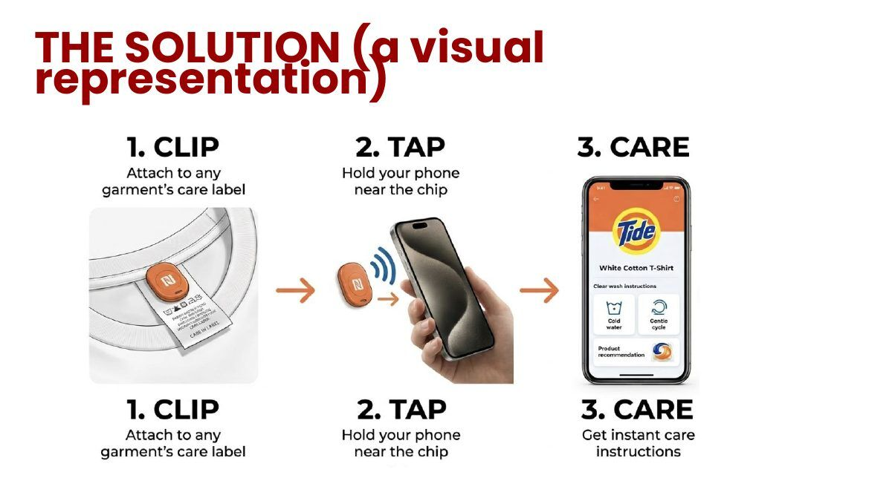
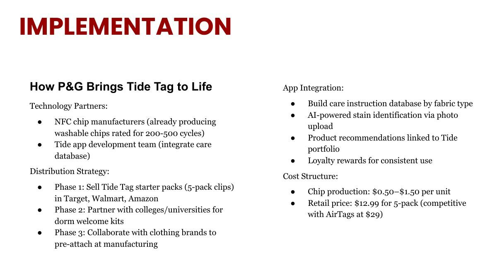
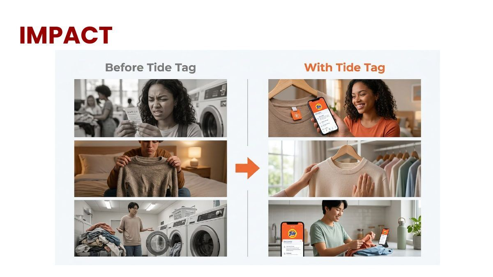

About this projectA student competition submission. It isn't affiliated with or endorsed by Procter & Gamble, and the product doesn't exist.
The problem
The brief asked how Tide could move beyond the laundry room and into Gen Z's daily routines. My angle: the real problem isn't access to a washer. It's knowing what to do once you're standing in front of one. The pitch cited figures that 56% of people don't understand care-label symbols and 1 in 3 Gen Z have ruined clothes by washing them wrong, plus a 2025 UK study (AO.com) estimating 26.4 million Gen Z items sitting unworn because of laundry confusion.
The concept
- Clip: attach a reusable chip to any garment's care label.
- Tap: hold an NFC-enabled phone near it.
- Care: get the wash cycle, water temperature, the right Tide product, stain guidance and "wash now vs. spot-clean" advice in the Tide app.


Go-to-market and economics
- Phase 1: five-pack starter kits at Target, Walmart and Amazon.
- Phase 2: university partnerships for dorm welcome kits, reaching students as they start doing laundry on their own.
- Phase 3: clothing brands pre-attach tags at manufacturing.
- Unit economics as proposed: washable NFC chips at about $0.50–$1.50 each, and a $12.99 retail price for a five-pack.
- Why it matters to Tide: it positions Tide as the authority on clothing care, creates recurring app engagement, and reduces over-washing (water, energy and textile waste).

Limitations
- A four-day concept: the costs and impact are proposed estimates, not tested in market.
- Some supporting statistics come from a UK study and would need U.S. validation.
What I learned
My approach started with the data: over 26 million Gen Z clothing items sit unworn because of laundry confusion, and that insight drove the solution. Taking it from a consumer pain point to a business case for implementation sharpened my ability to translate data into strategy, and strategy into a compelling pitch.